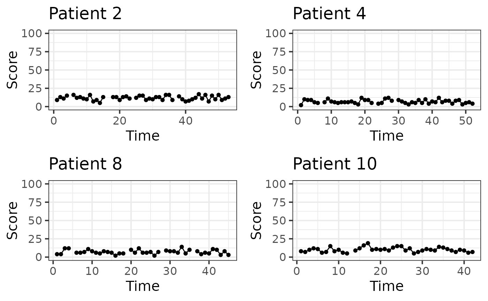
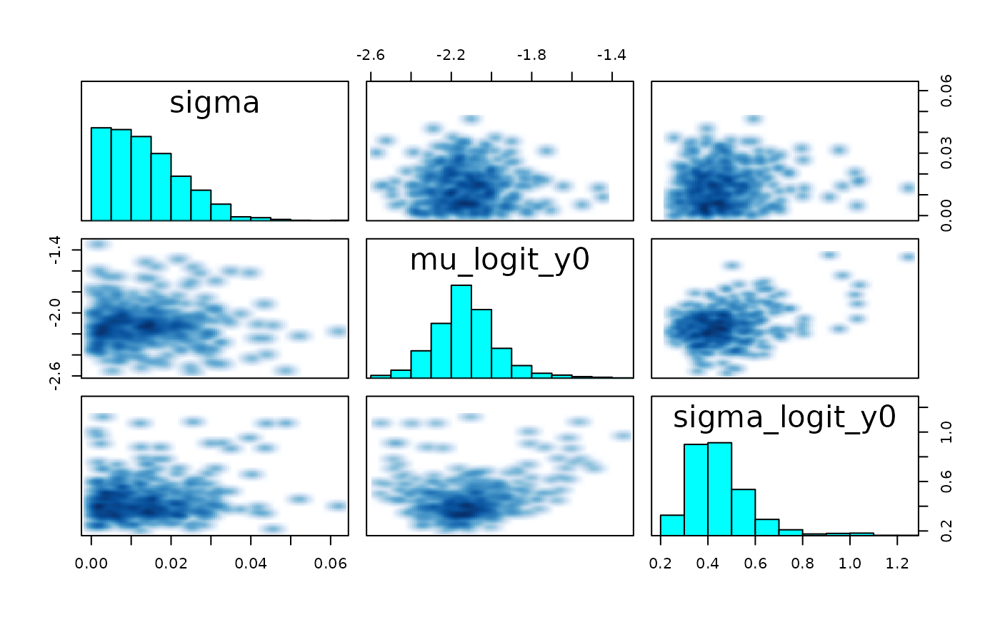
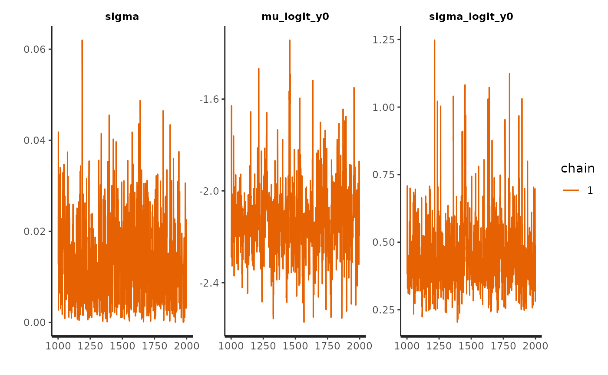
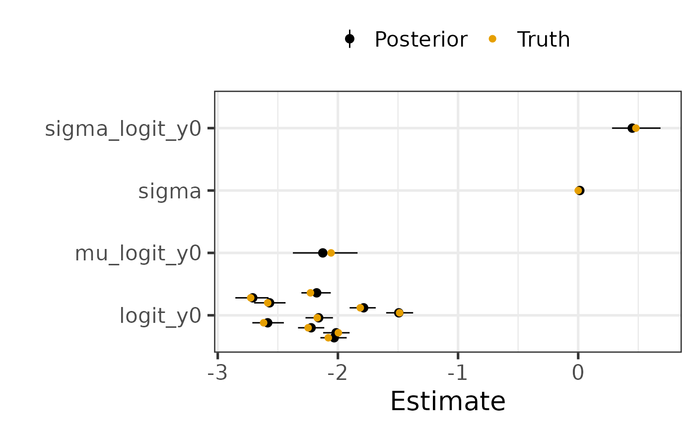
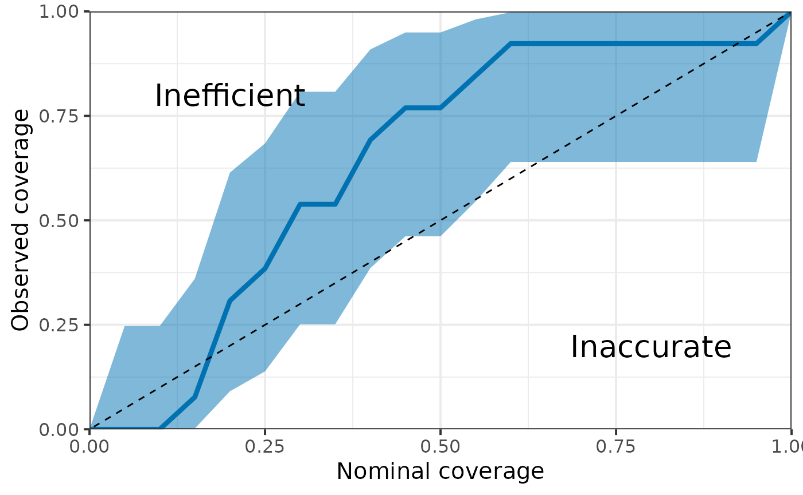
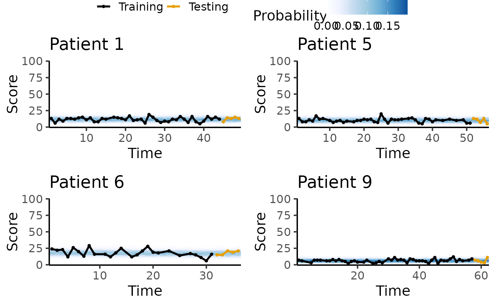

In this example, I will show how to use the Binomial random walk model (BinRW), notably how to generate data from the prior predictive distribution, how to fit the model to data and how to analyse the results.
This vignette could also be used as a demonstration for the other discrete longitudinal models, i.e. the Binomial Markov Chain (BinMC) and the ordered logistic random walk model (OrderedRW), which have a similar architecture.
library(EczemaPred)
library(HuraultMisc)
library(dplyr)
#>
#> Attaching package: 'dplyr'
#> The following objects are masked from 'package:stats':
#>
#> filter, lag
#> The following objects are masked from 'package:base':
#>
#> intersect, setdiff, setequal, union
library(tidyr)
library(ggplot2)
library(cowplot)
library(rstan)
#> Loading required package: StanHeaders
#>
#> rstan version 2.32.7 (Stan version 2.32.2)
#> For execution on a local, multicore CPU with excess RAM we recommend calling
#> options(mc.cores = parallel::detectCores()).
#> To avoid recompilation of unchanged Stan programs, we recommend calling
#> rstan_options(auto_write = TRUE)
#> For within-chain threading using `reduce_sum()` or `map_rect()` Stan functions,
#> change `threads_per_chain` option:
#> rstan_options(threads_per_chain = 1)
#>
#> Attaching package: 'rstan'
#> The following object is masked from 'package:tidyr':
#>
#> extract
options(mc.cores = parallel::detectCores()) # Parallel computing
model_name <- match.arg(params$model_name, c("BinRW", "BinMC", "OrderedRW"))
model <- EczemaModel(model_name, max_score = params$max_score)
set.seed(2021) # For reproducibility
N_patient <- 10
t_max <- rpois(N_patient, 50)
pars <- list_parameters(model_name)
pars_of_interest <- pars[c("Population", "Patient")]
model
#> BinRW model (discrete)
#> max_score = 100
#> Prior:
#> - sigma ~ normal+(0,0.4)
#> - mu_logit_y0 ~ normal(0,1)
#> - sigma_logit_y0 ~ normal(0,1.5)Prior predictive distribution
First, we sample from the prior predictive distribution to inspect the prior and generate fake data.
fit0 <- sample_prior(model,
N_patient = N_patient,
t_max = t_max,
chains = 1,
refresh = 0)
check_hmc_diagnostics(fit0)
#>
#> Divergences:
#> 0 of 1000 iterations ended with a divergence.
#>
#> Tree depth:
#> 0 of 1000 iterations saturated the maximum tree depth of 10.
#>
#> Energy:
#> E-BFMI indicated no pathological behavior.
# pairs(fit0, pars = pars$Population)
plot(fit0, pars = c(pars$Population, paste0(pars$Patient, "[1]")), plotfun = "hist")
#> `stat_bin()` using `bins = 30`. Pick better value with `binwidth`.Generating fake data
We generate fake data by choosing a draw from one the prior predictive distribution.
p_mis <- .1
p_obs_obs <- .9
horizon <- 5
# Take one draw (different draws corresponds to different a priori pattern in the data)
draw <- 4
true_param <- rstan::extract(fit0, pars = c(pars$Population, pars$Patient)) %>%
HuraultMisc::extract_draws(draw)
yrep <- rstan::extract(fit0, pars = "y_rep")[[1]]
fd <- get_index2(t_max) %>%
mutate(Score = yrep[draw, ])We artificially produce missing values to make the data more representative to what we observe in real life. Here, we generate missingness using a two-state Markov Chain.
fd <- lapply(1:N_patient,
function(i) {
sub_fd <- filter(fd, Patient == i)
id_mis <- generate_missing(t_max[i] - horizon, type = "markovchain", p_mis = p_mis, p_obs_obs = p_obs_obs)
id_mis <- c(id_mis, rep(FALSE, horizon)) # don't generate missing values for prediction horizon
sub_fd[id_mis, "Score"] <- NA
return(sub_fd)
}) %>%
bind_rows()We inspect the time-series of a few patients.
lapply(sort(sample(1:N_patient, min(N_patient, 4))),
function(pid) {
fd %>%
filter(Patient == pid) %>%
ggplot(aes(x = Time, y = Score)) +
geom_line() +
geom_point() +
coord_cartesian(ylim = c(0, params$max_score)) +
labs(title = paste0("Patient ", pid)) +
theme_bw(base_size = 15)
}) %>%
plot_grid(plotlist = ., ncol = 2)
Fitting data to the model
Now, we perform fake data check, i.e. fitting the model to the fake data extracted from the prior predictive distribution to see if we can recover the true parameters.
train <- fd %>%
group_by(Patient) %>%
filter(Time <= max(Time) - horizon) %>%
ungroup() %>%
drop_na()
test <- fd %>%
group_by(Patient) %>%
filter(Time > max(Time) - horizon) %>%
mutate(Horizon = Time - min(Time) + 1) %>%
ungroup() %>%
drop_na()
fit <- EczemaFit(model,
train = train,
test = test,
chains = 1, # only one chain for speed
refresh = 0)Diagnostics
We look for evidence of an absence of convergences by inspecting divergences and trace plots.
check_hmc_diagnostics(fit)
#>
#> Divergences:
#> 0 of 1000 iterations ended with a divergence.
#>
#> Tree depth:
#> 0 of 1000 iterations saturated the maximum tree depth of 10.
#>
#> Energy:
#> E-BFMI indicated no pathological behavior.
pairs(fit, pars = pars$Population)
#> Warning in par(usr): argument 1 does not name a graphical parameter
#> Warning in par(usr): argument 1 does not name a graphical parameter
#> Warning in par(usr): argument 1 does not name a graphical parameter
plot(fit, pars = pars$Population, plotfun = "trace")
Posterior estimates
We visualise posterior estimates and compare them to their prior.
par0 <- extract_parameters(fit0, pars = pars_of_interest)
par <- extract_parameters(fit, pars = pars_of_interest)
HuraultMisc::plot_prior_posterior(par0, par, pars = pars$Population)We can also quantify the influence of the prior on the posterior estimates by computing the posterior shrinkage and Mahalanobis distance between the mean posterior and the prior. The posterior shrinkage roughly quantifies how much the model is learning, and is defined for a parameter as . The distance between the prior and posterior can be used to assess whether the prior is informative or not, where a distance greater than 2 or 3 could be interpreted as a posterior that is not “included” in the prior.
HuraultMisc::plot_prior_influence(par0, par, pars = unlist(pars_of_interest))Can we recover the true parameters?
We compare the posterior estimates to the true parameters to see if the algorithm worked as expected.
par %>%
left_join(true_param, by = c("Variable" = "Parameter", "Index")) %>%
rename(True = Value) %>%
ggplot(aes(x = Variable, group = Index)) +
geom_pointrange(aes(y = Mean, ymin = `5%`, ymax = `95%`, colour = "Posterior"),
position = position_dodge(width = .8)) +
geom_point(aes(y = True, colour = "Truth"), size = 2,
position = position_dodge(width = .8)) +
coord_flip() +
scale_colour_manual(values = c("Posterior" = "black", "Truth" = "#E69F00")) +
labs(x = "", y = "Estimate", colour = "") +
theme_bw(base_size = 20) +
theme(legend.position = "top")
We can also quantify the “accuracy” of posterior estimates by computing the coverage probability of the parameters in the model, that is the proportion of parameters for which the x% credible interval includes the true value. For instance, we would expect that approximately 50% of the parameters have their 50% credible interval including the true value.
HuraultMisc::plot_coverage(do.call(cbind, rstan::extract(fit, pars = true_param[["Parameter"]])),
true_param[["Value"]])
Posterior predictive trajectory
We inspect the posterior predictive trajectory to detect any discrepancies between the data and model’s simulations.
ms <- min(1, 20 / (params$max_score + 1))
pl <- lapply(sort(sample(1:N_patient, 4)),
function(pid) {
tryCatch({
plot_ppc_traj_pmf(fit, train = train, test = test, patient_id = pid, max_score = params$max_score, max_scale = ms) +
labs(title = paste0("Patient ", pid))
}, error = function(e) {NULL})
})
plot_grid(
get_legend(pl[[1]] + theme(legend.position = "top")),
plot_grid(plotlist = lapply(pl, function(x) {x + theme(legend.position = "none")}),
ncol = 2),
ncol = 1, rel_heights = c(.1, .9)
)
Performance
Finally, we compute the lpd and RPS for each observation in the test set and plot the average metrics as a function of prediction horizon. We would expect a lower performance (decreased lpd, increased RPS) with increasing prediction horizon.
test <- test %>%
mutate(lpd = extract_lpd(fit),
RPS = extract_RPS(fit))
test %>%
pivot_longer(cols = c("lpd", "RPS"), names_to = "Metric", values_to = "Value") %>%
group_by(Metric, Horizon) %>%
summarise(Mean = mean(Value), SD = sd(Value), SE = SD / sqrt(n())) %>%
ggplot(aes(x = Horizon, y = Mean, ymin = Mean - SE, ymax = Mean + SE)) +
geom_pointrange() +
facet_wrap(vars(Metric), scales = "free") +
theme_bw(base_size = 15)
#> `summarise()` has grouped output by 'Metric'. You can override using the
#> `.groups` argument.